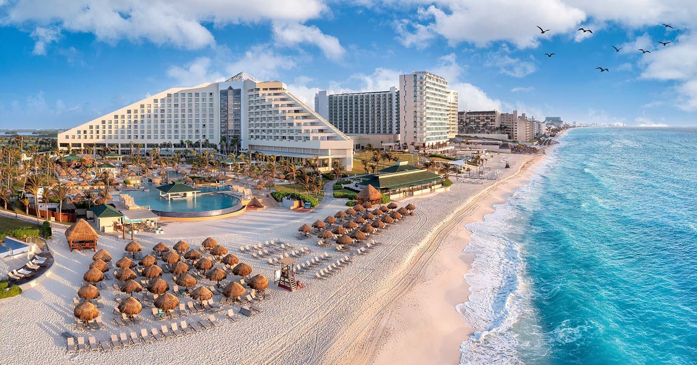
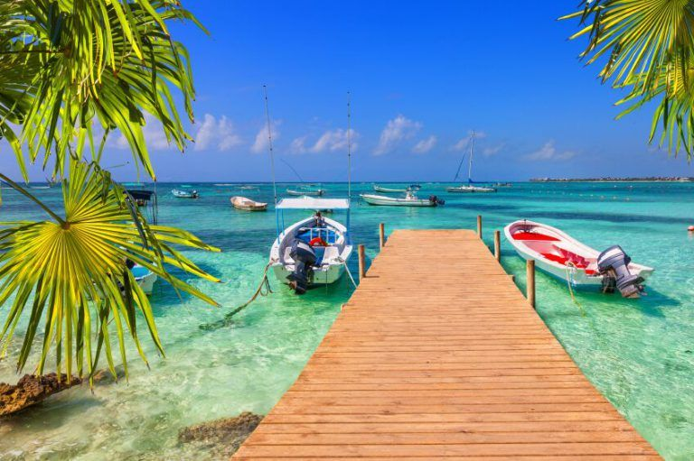
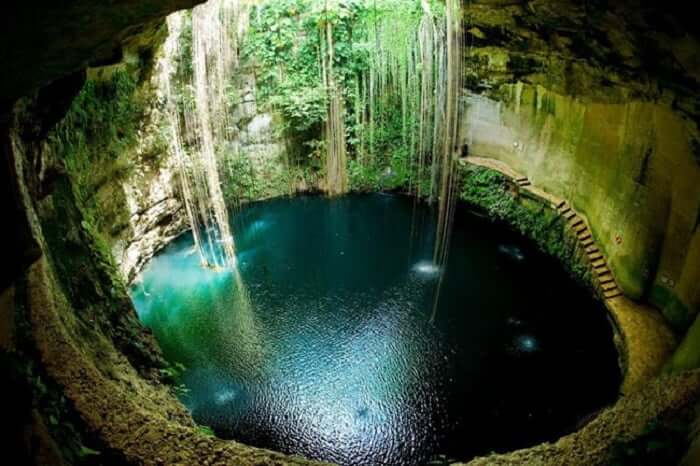

Sobre o destino
Cancún é um dos destinos mais famosos do Caribe, conhecido por suas praias de areia branca, mar azul-turquesa e resorts luxuosos. É perfeito para quem busca descanso, diversão e vida noturna.
Pontos Turísticos Imperdíveis:
- Zona Hoteleira: Onde estão os principais resorts e praias.
- Isla Mujeres: Ilha paradisíaca com águas cristalinas.
- Chichén Itzá: Uma das 7 maravilhas do mundo moderno.
- Cenotes: Piscinas naturais impressionantes.
- Vida Noturna: Bares e baladas famosas.
Guia Rápido

Melhor época: Dezembro a abril - com clima seco e ensolarado durante quase o ano todo

Como chegar: Aeroporto Internacional de Cancún recebe voos do mundo todo.

Idioma: Espanhol - inglês é amplamente falado nas áreas turísticas.

Moeda: Peso mexicano - o dólar também é aceito em muitos lugares.
Custos Médios
- Hotel: $100 - $400 por noite
- Alimentação: $10 - $30 por refeição
- Transporte: $1 - $10 por trajeto
Localização
Galeria de Fotos


